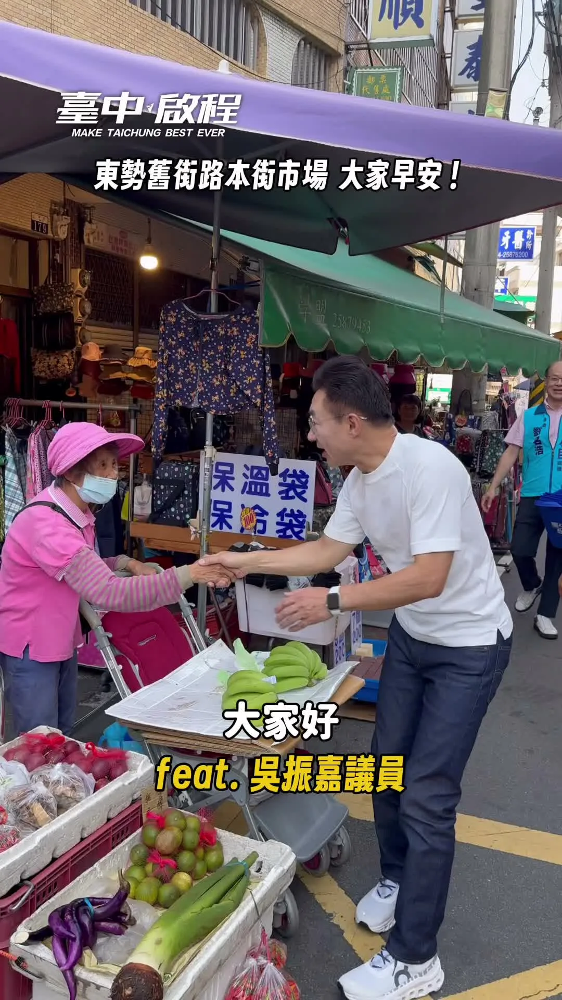

鄉親的喉糖顧嗓，每聲加油暖心！❤️ 今天走進 #豐原第一市場，和熟悉的攤商、採買的鄉親握手問好。一位大哥特地送上枇杷喉糖，提醒我照顧喉嚨；還有鄉親高喊「海龍一定當選！」、拿著「臺中啟程」提袋與我合照，滿滿人情味，讓啟臣感謝又感動。 一包喉糖、一聲加油，都是支持，更是責任。啟臣會繼續一步一腳印，走進大家的日常、傾聽地方需求，把鄉親的疼惜化為服務的動力，為臺中拚更好的未來！ #臺中啟程 #打造旗艦城 #臺中升級幸福加給
Posts
鄉親的喉糖顧嗓，每聲加油暖心！❤️ 今天走進 #豐原第一市場，和熟悉的攤商、採買的鄉親握手問好。一位大哥特地送上枇杷喉糖，提醒我照顧喉嚨；還有鄉親高喊「海龍一定當選！」、拿著「臺中啟程」提袋與我合照，滿滿人情味，讓啟臣感謝又感動。 一包喉糖、一聲加油，都是支持，更是責任。啟臣會繼續一步一腳印，走進大家的日常、傾聽地方需求，把鄉親的疼惜化為服務的動力，為臺中拚更好的未來！ #臺中啟程 #打造旗艦城 #臺中升級幸福加給

何欣純北屯金谷市場走一圈！想和你聊聊天🫶


早安！我們等下見！！ 🕤️時間：9／19（六）上午9：30 🌏️地點：大里新興宮（八媽廟) 大里區新仁路2段162號
等我嗎？ 我來了！ 謝謝你們願意等待何欣純！❤ 🌊欣潮 💫追欣族🍄何鮮菇 🫶台中純派 #台中北屯總站夜市😘😘
何欣純推屯區「五大進擊」 打造六星新屯區 台中市長候選人、立法委員何欣純今（18） […] 〈 何欣純推屯區「五大進擊」 打造六星新屯區 〉這篇文章最早發佈於《 何欣純官方網站｜2026 台中市長候選人 》。


大家準備好讓 台北 沈伯洋 吃不完帶著走了嗎？ 不只讓要讓他嚐嚐南部的甜，也要讓他感受我們高雄的熱情！ 明天，賴瑞隆 x 沈伯洋 合體登場！從英雄路出發，走進港灣，用行動展現咱對這座城市的愛。 邀請大家揪朋友、帶家人，把線上的加油，化成現場最有力的相挺，明天下午4點，我們英雄路見！ ⏰ 時間｜9月19日（六）下午4點 📍 集合｜五福三路、英雄路口 🚶 路線｜集合出發 → 英雄路 → Focus 13珊瑚廣場 → 愛河灣水樂園 🔔 提醒｜因候選人後續尚有民進黨40週年音樂會行程，現場不開放簽名

每一位 #東勢 鄉親朋友的支持與鼓勵，啟臣都收到了！ 看著大家從我擔任第一屆立法委員以來，就一路熱情相挺，讓人感到無比溫暖。 剩下的日子，我們一起繼續走完、一起打拚！


#大風起 919鳳山大造勢 志家人，集結吧🔥 📍 捷運鳳山西站旁｜2號出口 ⏰ 15:00入場｜15:30正式開始 ‼️特別嘉賓： 競選總部主委、前立法院院長 台灣公道伯 王金平 台北市長 蔣萬安 新北市長候選人 李四川Hammer Lee - 🌙 造勢結束後「安可場」 前進六合夜市！ 鳳山造勢結束，我將和 #蔣萬安 市長一起走進 #六合夜市，逛夜市、吃美食，和高雄鄉親見面👋 📍 六合夜市（起點：六合二路、自立二路口） ⏰ 9/19（六）18:30開始 下午鳳山見，晚上六合見！ 鄉親明天見💙💛 #萬四平安 #萬事平安

@schuanglawyer:🌊洋流來襲 杰伴同行🤝 我的家族學弟撲馬、台北市長候選人沈伯洋 @pumashen ，要來逛我從小就很熟悉的中壢夜市，大家週日見！ 🔺時間｜9/20（日）20:15 🔺集合｜大舊社市民活動中心（中壢區新明路223號）

@a_chun1973:來到市場，除了看看新鮮蔬果，更期待的是和大家握握手、聊聊天，聽聽生活裡的大小事❤️ 我會繼續走進大台中的每一個市場，下一站，說不定就遇見你！

洋流即將到港，隆捲風蓄勢待發🌪️ 各路好漢，今天下午4點英雄路集合！ 天氣晴朗又遇 台北 沈伯洋 洋流來襲，記得做好防曬、隨時補充水分，我們不見不散！ ⏰ 時間｜9月19日 （六）下午4點 📍 集合｜五福三路、英雄路口 🚶 路線｜集合出發 → 英雄路 → Focus 13珊瑚廣場 → 愛河灣水樂園 🔔 提醒｜因候選人後續尚有民進黨40週年音樂會行程，現場不開放簽名

謝謝烏日！ 超過1500位鄉親的熱情，啟臣都收到了！ 烏日是臺中人口成長最快的地方之一，更是未來的「中臺灣第三大門戶」。面對發展，我會和 為民說話-吳瓊華 市議員、顏寬恒 委員一起打拚，為烏日的未來超前部署！ ✨20分鐘生活圈：加速鐵路高架化與烏日轉運中心興建，讓鄉親20分鐘內輕鬆滿足就醫、就學、就業與生活所需。 ✨超前部署交通：因應未來購物城車流，我與寬恒委員持續向中央爭取國一及台74線增設匝道直通高鐵，並新闢聯外道路，減輕塞車負擔。 ✨全齡安心照顧：從新建旭日國小到升級敬老愛心卡，用心守護長輩與孩子。 這裡沒有政治口水，只有實實在在的願景。請大家當啟臣與瓊華議員最強的後盾，我一定用「#加倍的建設」回報烏日，帶領臺中迎向下一個黃金十年！💪 #臺中啟程 #打造旗艦城 #中臺灣第三大門戶 #20分鐘生活圈 #高鐵特區

@a_chun1973:早安！我們等下見！！ 🕤️時間：9／19（六）上午9：30 🌏️地點：大里新興宮（八媽廟) 大里區新仁路2段162號

大家準備好讓 台北 沈伯洋 吃不完帶著走了嗎？ 不只讓要讓他嚐嚐南部的甜，也要讓他感受我們高雄的熱情！ 明天，賴瑞隆 x 沈伯洋 合體登場！從英雄路出發，走進港灣，用行動展現咱對這座城市的愛。 邀請大家揪朋友、帶家人，把線上的加油，化成現場最有力的相挺，明天下午4點，我們英雄路見！ ⏰ 時間｜9月19日（六）下午4點 📍 集合｜五福三路、英雄路口 🚶 路線｜集合出發 → 英雄路 → Focus 13珊瑚廣場 → 愛河灣水樂園 🔔 提醒｜因候選人後續尚有民進黨40週年音樂會行程，現場不開放簽名

美琴好姊妹 明天我們台中見！
美琴好姊妹 明天我們台中見！

@prof.kochihen:大風起 919鳳山大造勢 志家人，集結吧🔥 📍 捷運鳳山西站旁｜2號出口 ⏰ 15:00入場｜15:30正式開始 ‼️特別嘉賓： 競選總部主委、前立法院院長 王金平 台北市長 蔣萬安 新北市長候選人 李四川
#大風起 919鳳山大造勢 志家人，集結吧🔥 📍 捷運鳳山西站旁｜2號出口 ⏰ 15:00入場｜15:30正式開始 ‼️特別嘉賓： 競選總部主委、前立法院院長 台灣公道伯 王金平 台北市長 蔣萬安 新北市長候選人 李四川Hammer Lee - 🌙 造勢結束後「安可場」 前進六合夜市！ 鳳山造勢結束，我將和 #蔣萬安 市長一起走進 #六合夜市，逛夜市、吃美食，和高雄鄉親見面👋 📍 六合夜市（起點：六合二路、自立二路口） ⏰ 9/19（六）18:30開始 下午鳳山見，晚上六合見！ 鄉親明天見💙💛 #萬四平安 #萬事平安

🌊洋流來襲 杰伴同行🤝 我的家族學弟撲馬、台北市長候選人沈伯洋 @pumashen ，要來逛我從小就很熟悉的中壢夜市，大家週日見！ 🔺時間｜9/20（日）20:15 🔺集合｜大舊社市民活動中心（中壢區新明路223號）

@a_chun1973:就在明天，星期六透早💗💗 蕭美琴副總統，就要來台中了！ 歡迎市民鄉親好朋友，給何欣純最大的鼓勵！！ 🕤️時間：9／19（六）上午9：30 🌏️地點：大里新興宮（八媽廟) 大里區新仁路2段162號

首都格局 台中進擊！台中市長候選人何欣純大里、霧峰後援會成立大會

@a_chun1973:早安！我們等下見！！ 🕤️時間：9／19（六）上午9：30 🌏️地點：大里新興宮（八媽廟) 大里區新仁路2段162號

@a_chun1973:等我嗎？ 我來了！ 謝謝你們願意等待何欣純！ 🌊欣潮 ⭐追欣族 🍄🟫何鮮菇 🫶台中純派 🔥台中北屯總站夜市😘😘

@zenolai:大家準備好讓 @pumashen 吃不完帶著走了嗎？ 不只讓要讓他嚐嚐南部的甜，也要讓他感受我們高雄的熱情！ 明天，賴瑞隆 x 沈伯洋 合體登場！從英雄路出發，走進港灣，用行動展現咱對這座城市的愛。 邀請大家揪朋友、帶家人，把線上的加油，化成現場最有力的相挺，明天下午4點，我們英雄路見！ ⏰ 時間｜9月19日（六）下午4點 📍 集合｜五福三路、英雄路口 🚶 路線｜集合出發 → 英雄路 → Focus 13珊瑚廣場 → 愛河灣水樂園 🔔 提醒｜因候選人後續尚有民進黨40週年音樂會行程，現場不開放簽名

@a_chun1973:美琴好姊妹 明天我們台中見！

每一位 #東勢 鄉親朋友的支持與鼓勵，啟臣都收到了！ 看著大家從我擔任第一屆立法委員以來，就一路熱情相挺，讓人感到無比溫暖。 剩下的日子，我們一起繼續走完、一起打拚！

@schuanglawyer:世杰挺青年！青年好發展，城市更有力🌱 今天舉辦第一次青年願景座談會，邀請在地青年寫下對桃園的願景。 大家的提問與交流都非常直接且深刻，幸好沒有被考倒！從居住、交通、公園，到觀光、原鄉地區照顧等問題。這些最真實的感受，就是未來施政、回應時代的重要方向。 市府會成為青年實現理想的重要助力，讓年輕人放膽發揮、勇敢追夢。無論是就業、創業、身心發展，甚至是前瞻的算力資源，我們要全面兼顧，為年輕世代打造更好的舞台。未來只要想到「桃園」，就是放心打拚、安心生活的關鍵字💪 杰伴小隊也在今天正式成立。心桃園，好青年！我們一起杰伴同行，讓夢想實踐💖


作伙跳起來！《世界高雄》純舞蹈版｜柯志恩2026高雄市長競選主題曲

🌊洋流來襲 杰伴同行🤝 我的家族學弟撲馬、台北市長台北 沈伯洋候選人，要來逛我從小就很熟悉的中壢夜市，大家週日見！ 🔺時間｜9/20（日）20:15 🔺集合｜大舊社市民活動中心（中壢區新明路223號）

@pumashen:周末行程來囉，一起來聊聊對於台北的想法吧！ 9/19（六） ⠀ 10:00 📍王孝維議員_聯合競總成立大會 內湖區金龍路196號（昇陽大地廣場） ⠀ 16:00 📍賴瑞隆市長候選人_洋流到港，隆捲風來襲 （高雄國軍英雄館前出發） ⠀ 18:30 📍民主進步黨創黨40週年音樂會 中正區北平東路30號 ⠀ 9/20（日） ⠀ 20:15 📍黃世杰市長候選人_中壢夜市